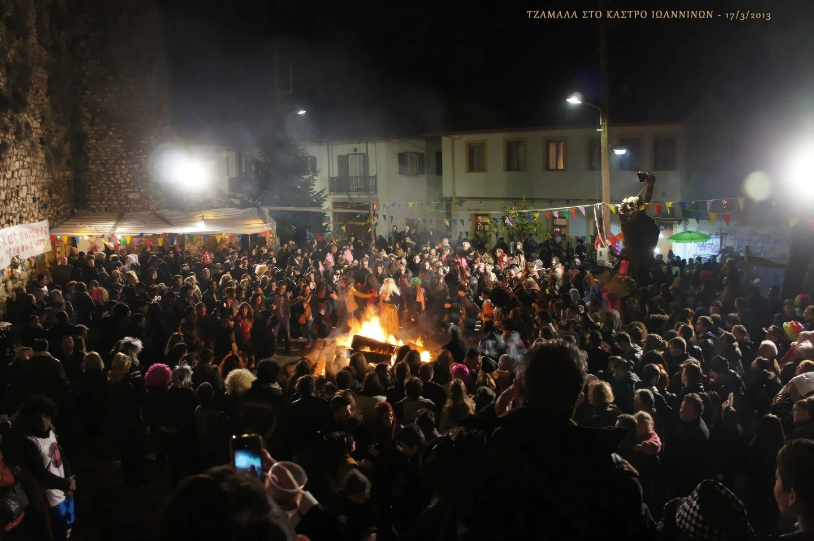
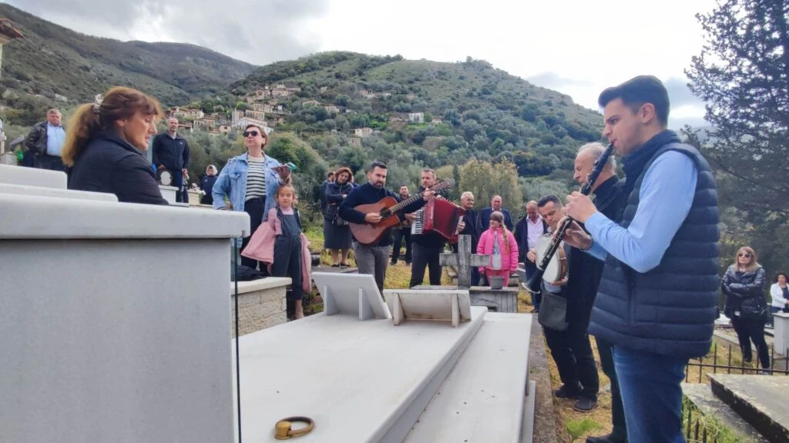
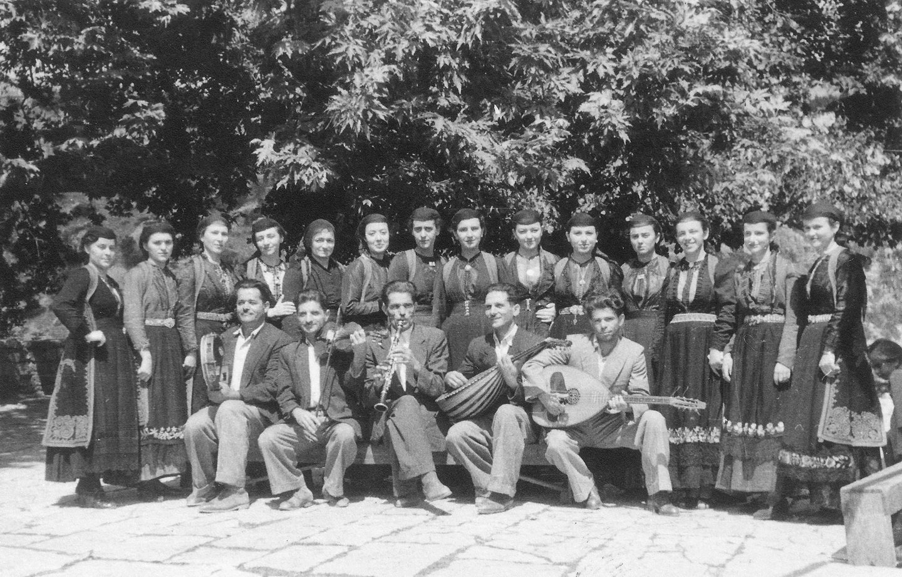
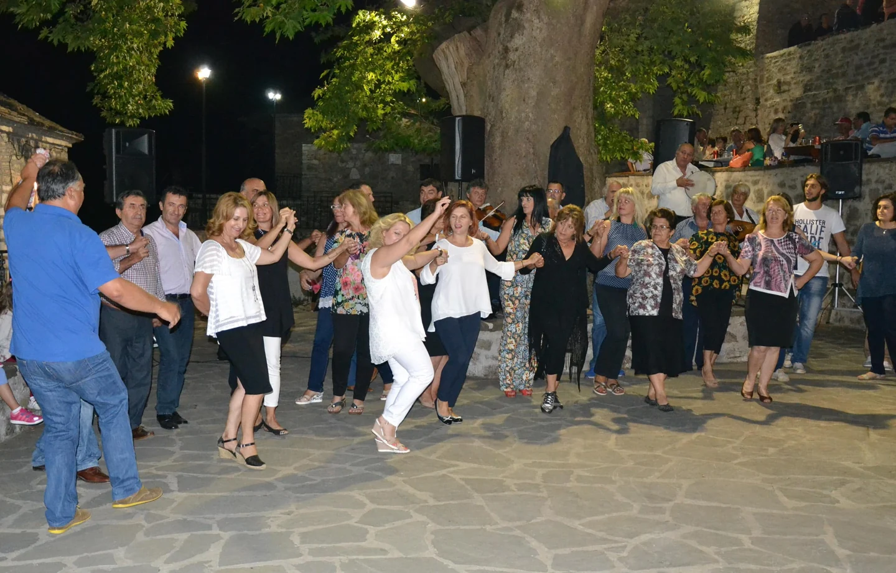

Μια σειρά από καρύδια στο χώμα. Το τρίξιμο των φύλλων στο τζάκι. Μια φωτιά στη γειτονιά των Ιωαννίνων και, μήνες αργότερα, ο κύκλος που σχηματίζεται στην πλατεία του χωριού. Τα έθιμα της Ηπείρου έχουν πρόσωπα, τόπους και ώρες που τις περιμένουν οι άνθρωποι.
Κάποιος θυμάται πώς έφτιαχναν το καλάθι του Λαζάρου· κάποιος άλλος επιστρέφει κάθε καλοκαίρι για το πανηγύρι. Η διαδρομή που ακολουθεί συνδυάζει ζωντανές πρακτικές με τις λαογραφικές καταγραφές του Συνδέσμου για τις γιορτές και τους σταθμούς της οικογενειακής ζωής. Κάποιες συνήθειες συνεχίζονται, άλλες σώζονται ως μαρτυρίες του παρελθόντος. Κάθε τόπος κρατά τις δικές του παραλλαγές, όπως κάθε οικογένεια κρατά τη δική της ανάμνηση.
Καρύδια στο χώμα, πουρνάρι στο κατώφλι
Η αυλή γινόταν τόπος παιχνιδιού με τα πιο απλά πράγματα. Κάθε παιδί ακουμπούσε ένα καρύδι πάνω σε μια γραμμή στο χώμα. Από ένα-δυο μέτρα μακριά, οι παίκτες σημάδευαν με το μεγαλύτερο και πιο στρογγυλό καρύδι τους. Όποιος έβγαζε ένα καρύδι από τη σειρά το κέρδιζε και ξαναδοκίμαζε· στην αστοχία έδινε τη σειρά στον επόμενο, ώσπου να αδειάσει η γραμμή.[1]
Στα χωριά της Άρτας, οι χριστουγεννιάτικες επισκέψεις είχαν τη λάμψη του αναμμένου πουρναριού. Γείτονες που πήγαιναν να ευχηθούν και παντρεμένα παιδιά που επέστρεφαν στους γονείς τους κρατούσαν ένα κλαδί που καιγόταν τρίζοντας. Η διήγηση που συνοδεύει το έθιμο το συνδέει με τους βοσκούς της Γέννησης, που άναψαν ξερόκλαδα για να φωτίσουν τη νυχτερινή διαδρομή τους. Είναι η παραδοσιακή εξήγηση του εθίμου, όπως διασώθηκε στην αφήγηση των ανθρώπων.[1]
Στα Ιωάννινα, η ίδια ευχή έφτανε στο τζάκι με μια χούφτα δαφνόφυλλα και πουρναρόφυλλα. Το τρίξιμο και οι σπίθες συνόδευαν την ευχή για προκοπή στα κοπάδια και μεγάλωμα της οικογένειας. Η επίσκεψη στο πατρικό ένωνε έτσι τη γιορτή με όσα κρατούσαν όρθιο το νοικοκυριό: τους ανθρώπους του και τον μόχθο τους.[1]
Ο αγιασμός περνούσε από κάθε κατώφλι
Την παραμονή των Θεοφανίων, οι αυλές, τα σπίτια και τα σοκάκια καθαρίζονταν για το πέρασμα του ιερέα. Ο αγιασμός απλωνόταν στους ανθρώπους, στα βοηθητικά κτίσματα και στα ζώα. Στο σκεύος του ιερέα έπεφτε και ένα νόμισμα, η μικρή προσφορά κάθε σπιτιού.[1]
Ανήμερα, τα δοχεία με το νερό πήγαιναν στην εκκλησία: κανάτια, μπουκάλια, γκιούμια και ό,τι είχε διαθέσιμο η οικογένεια. Στην επιστροφή έπιναν από τον αγιασμό και ράντιζαν το σπίτι, τον κήπο, τα χωράφια και τα ζώα. Όσο περίσσευε φυλασσόταν· του απέδιδαν και θεραπευτική δύναμη, μια πίστη της εποχής που ανήκει στη λαογραφική μνήμη.[1]
Στις χειμωνιάτικες καταγραφές συναντούμε επίσης φωτιές του Αϊ-Γιάννη, την επομένη των Θεοφανίων, συνδεδεμένες με την απομάκρυνση των καλικάντζαρων και του κακού. Πρόκειται για ξεχωριστή ημερολογιακή αναφορά από τις αποκριάτικες τζαμάλες των Ιωαννίνων· οι τοπικές ονομασίες και οι περιστάσεις δεν ήταν παντού ίδιες.[1]
Τζαμάλες: η γειτονιά ξαναβρίσκεται γύρω από τη φωτιά
Την τελευταία Κυριακή της Αποκριάς, η φωτιά γίνεται σημείο συνάντησης. Στο Κάστρο, στην Καραβατιά, στα Λακκώματα και σε άλλες γειτονιές των Ιωαννίνων στήνονται οι τζαμάλες: μεγάλοι σωροί ξύλων μέσα σε κύκλο άμμου, που καίνε ως τις πρώτες ώρες της Καθαράς Δευτέρας. Γύρω τους σμίγουν ο χορός, το τραγούδι, η φασολάδα, το κρασί και το τσίπουρο.[2]
Η διαδρομή από τη μια φωτιά στην άλλη είναι και μια διαδρομή μέσα στις γειτονιές της πόλης. Άνθρωποι διαφορετικών ηλικιών βρίσκονται στον ίδιο κύκλο· ο περαστικός μπορεί να σταθεί για λίγο ή να μείνει μέχρι αργά. Η φιλοξενία παίρνει μια πολύ συγκεκριμένη μορφή: μια θέση κοντά στη ζέστη, ένα πιάτο φαγητό, μια πρόσκληση στον χορό.
Το έθιμο τεκμηριώνεται από τον 19ο αιώνα. Η σημερινή του ζωή συνδέεται με την επανάληψη αυτής της συνάντησης, κάθε χρόνο, μέσα στην ίδια την πόλη. Για όποιον έχει φύγει από τα Ιωάννινα, η επιστροφή στις Απόκριες μπορεί να σημαίνει και επιστροφή στη γειτονιά του.[2]
Οι μεταμφιέσεις, τα ξύλα και τα παιχνίδια της παρέας
Στα χωριά, η Αποκριά απλωνόταν σε διαδοχικά σαββατοκύριακα και κορυφωνόταν την Κυριακή της Τυροφάγου. Οι παρέες ετοιμάζονταν κρυφά και ξεχύνονταν από σπίτι σε σπίτι και στα μαγαζιά. Προσωπίδες, παλιά σιγκούνια και βράκες, τσαρούχια, κουδούνια, προβιές και κέρατα άλλαζαν τις γνώριμες μορφές. Στα χέρια εμφανίζονταν ρόκες και άλλα αντικείμενα της καθημερινότητας· το αστείο ήταν να μην αναγνωρίζεται αμέσως ο μασκαράς. Οι οικοδεσπότες πρόσφεραν αυγά, γλυκό και ποτό.[1]
Η βραδινή φωτιά χρειαζόταν τη δουλειά πολλών. Γυναίκες και κορίτσια κουβαλούσαν ξύλα από τους λόγγους, ενώ στα Κουρεντοχώρια οι νέοι τα ζητούσαν από τα νοικοκυριά. Στη διήγηση σώζεται και το αποκριάτικο πείραγμα της κρυφής αφαίρεσης ξύλων από εκείνον που δεν πρόσφερε. Στην πλατεία άναβαν η «αλαγούζια» ή η τζαμάλα και άρχιζε ο χορός, συχνά μόνο με τις φωνές των χορευτών. Κρεατόπιτες και τυρόπιτες συνόδευαν το αποκριάτικο τραπέζι.[1]
Στη «χάψα», ένα βραστό αυγό κρεμόταν από κλωστή και οι παίκτες προσπαθούσαν να το πιάσουν με το στόμα· όποιος το κατάφερνε το κέρδιζε. Ο «Βαλμάς» είχε διαφορετικές τοπικές περιγραφές: από σπρωξίματα στον κύκλο προς τη φωτιά έως μιμητικό παιχνίδι αφέντη και αλογοβοσκού, με ερωταποκρίσεις και κυνηγητό. Η δεύτερη μορφή καταγράφεται από τον Σύλλογο Ηπειρωτών Ροδόπης.[1][11]
Το γλέντι έφτανε ως την Καθαρά Δευτέρα και η θράκα μπορούσε να κρατήσει ακόμη περισσότερο. Το κλείσιμο συνδεόταν με τον σατιρικό χορό του πιπεριού και με ευχές για καλή Σαρακοστή. Η αυστηρή νηστεία που ακολουθούσε άφησε και την παράξενη αφήγηση της αναζήτησης ενός αυγού πέρδικας στο βουνό, ως μοναδικής επιτρεπτής τροφής εκείνης της ημέρας. Είναι μια επιμέρους λαϊκή δοξασία της καταγραφής, όχι γενικός κανόνας της νηστείας.[1]

Το μαρτίτσι και το καλάθι του Λαζάρου
Στον καρπό, συνήθως τον αριστερό, μικροί και μεγάλοι έδεναν από την παραμονή του Μάρτη το μαρτίτσι: δυο ή τρία κόκκινα και λευκά νήματα, συχνά μάλλινα, πλεγμένα μεταξύ τους. Το φορούσαν με την προσδοκία να μην τους μαυρίσει ο μαρτιάτικος ήλιος. Στην παραλλαγή που έχει καταγράψει ο Σύνδεσμος, το κρατούσαν ως το Πάσχα και το έκαιγαν με τη λαμπάδα τη νύχτα της Ανάστασης.[1]
Το Σάββατο του Λαζάρου έφερνε ξανά τις φωνές από σπίτι σε σπίτι. Τα κάλαντα συνόδευε η σπόρτα, ένα καλάθι με λουλούδια και κουδούνια, που γέμιζε με τα αυγά των νοικοκυριών. Έτσι, το τραγούδι, η επίσκεψη και το φίλεμα έμπαιναν μαζί στην προετοιμασία της μεγάλης γιορτής.[1]
Το κόκκινο αυγό, το φως και το κοινό τραπέζι
Πριν από τη Μεγάλη Εβδομάδα, τα σπίτια καθαρίζονταν και οι αυλές ασβεστώνονταν. Τη Μεγάλη Πέμπτη άρχιζαν το ζύμωμα των τσουρεκιών και το βάψιμο των αυγών. Το πρώτο κόκκινο αυγό έμπαινε στο εικονοστάσι ως φυλαχτό του σπιτιού, της γης και των ζώων. Το αυγό της προηγούμενης χρονιάς θαβόταν στο χωράφι ή στο μαντρί, με την ευχή για καλή σοδειά και πληθυσμό στα κοπάδια.[1]
Γυρίζοντας από την Ανάσταση, πριν περάσουν το κατώφλι, σχημάτιζαν με τη φλόγα τον σταυρό στην εξώπορτα. Έπειτα άναβαν το καντήλι, θέλοντας να κρατήσουν το Άγιο Φως μέσα στο σπίτι όλη τη χρονιά. Μια μικρή κίνηση στην πόρτα συνέδεε το εκκλησίασμα με την οικογενειακή ζωή.[1]
Στο πασχαλινό τραπέζι συναντούμε το αρνί στη σούβλα, αλλά και το κρέας στη γάστρα, πολλές πίτες και συκωταριά με σπανάκι, επίσης στη γάστρα, αντί για μαγειρίτσα. Σε χωριά το ψήσιμο και το φαγητό γίνονταν κοινή υπόθεση στις πλατείες και στις αλάνες. Η Κυριακή περιλάμβανε τον Εσπερινό της Αγάπης· όπου ο Άγιος Γεώργιος ήταν πολιούχος, το γλέντι μπορούσε να συνεχιστεί ως την Τρίτη του Πάσχα. Οι γεύσεις αυτής της συνάντησης συνεχίζονται στο αφιέρωμα Γεύσεις & συνταγές.[1]
Ένα αγαπημένο τραγούδι για εκείνους που λείπουν
Στο Γηρομέρι Φιλιατών, τη Δευτέρα του Πάσχα η μουσική φτάνει ως το κοιμητήριο. Συγγενείς και φίλοι πηγαίνουν μαζί με οργανοπαίχτες στους τάφους και ζητούν να ακουστεί το τραγούδι που αγαπούσε ο άνθρωπός τους. Στην καταγραφή της ΕΡΤ το 2023, η διαδρομή περνά και από μνήματα όπου δεν βρίσκεται άμεσος συγγενής.[3]
Η πράξη αυτή δίνει στην ανάμνηση έναν ήχο. Ένα τραγούδι που κάποτε συνόδευε μια χαρά ακούγεται τώρα δίπλα στο όνομα εκείνου που το ζητούσε. Η οικογενειακή μνήμη βγαίνει από το σπίτι και συναντά τη μνήμη ολόκληρου του χωριού. Ο επισκέπτης χρειάζεται να πλησιάσει με τη διακριτικότητα που αρμόζει σε μια τόσο προσωπική στιγμή.
Εδώ η πασχαλινή συνάντηση περιλαμβάνει και τους απόντες. Το κλαρίνο και το βιολί γίνονται τρόπος να ειπωθεί ότι ο άνθρωπος εξακολουθεί να έχει θέση ανάμεσα στους δικούς του. Για μια περιοχή που γνωρίζει καλά τον αποχωρισμό, αυτή η παρουσία μέσα από το τραγούδι έχει ιδιαίτερο βάρος.

Το καγκελάρι: όταν τον ρυθμό τον κρατούν οι φωνές
Στη Ροδαυγή, το καγκελάρι συνδέεται με τις πασχαλινές γιορτές και με το πανηγύρι της Αγίας Παρασκευής. Η καταγραφή του Υπουργείου Πολιτισμού το 2018 το τοποθετεί την Τρίτη της Λαμπρής και στις 27 Ιουλίου. Η ακριβής ημέρα μιας σημερινής διοργάνωσης χρειάζεται πάντοτε επιβεβαίωση από τον τοπικό Σύλλογο.[4]
Στον χορό, οι ανθρώπινες φωνές δίνουν τη μουσική συνοδεία. Οι άνδρες ξεκινούν το τραγούδι και οι γυναίκες απαντούν. Ο μπροστάρης οδηγεί τις δίπλες και τα καγκελίσματα, ενώ η αλυσίδα των χορευτών ακολουθεί τη διαδρομή που ανοίγεται στην πλατεία. Η τοπική περιγραφή τονίζει τη συμμετοχή μεγαλύτερων και νεότερων, με τα παιδιά να βρίσκουν κι αυτά τη θέση τους.[5]
Για να ακολουθήσει κανείς, χρειάζεται να ακούει και να προσέχει τον διπλανό του. Το βήμα, η φωνή και η κατεύθυνση εξαρτώνται από τους υπόλοιπους. Παρόμοιες πρακτικές καταγράφονται ως Κύκλες ή καγκελάρι σε περισσότερους τόπους της Ηπείρου, με τοπικές διαφορές· η Ροδαυγή έχει τη δική της μορφή και ιστορία.[6]
Στη Βίτσα, το πανηγύρι είναι δουλειά όλου του χωριού
Γύρω από τον παλιό πλάτανο στο μεσοχώρι της Βίτσας, η γιορτή της Παναγίας απλώνεται σε τριήμερο πανηγύρι. Η διοργάνωσή του στηρίζεται στην εθελοντική συμμετοχή των κατοίκων. Η καταγραφή του 2021 κρατά μαζί δύο όψεις της ίδιας παράδοσης: τον χορό στην πλατεία και τη συλλογική φροντίδα που τον κάνει δυνατό.[7]
Η ευθύνη της προετοιμασίας είναι μέρος αυτής της συνάντησης. Όταν το χωριό υποδέχεται τους ανθρώπους του και τους επισκέπτες, η προσφορά χρόνου αποκτά το ίδιο βάρος με την ώρα της γιορτής. Έτσι, το πανηγύρι συνδέει όποιον χορεύει με όποιον φροντίζει για τη διοργάνωση.
Οι παλιές φωτογραφίες δίνουν στη συνέχεια πρόσωπα. Μια χορευτική ομάδα γυναικών του 1958, οι πρόβες που φωτογραφήθηκαν το 1950, οι μουσικοί μετά το πανηγύρι του 1928: διαφορετικές γενιές σώζονται στην ίδια μουσειακή καταγραφή. Κοιτάζοντάς τες, μπορεί κανείς να αναζητήσει τα χέρια, τα βλέμματα και τη θέση κάθε ανθρώπου μέσα στην παρέα, πριν σταθεί στις αλλαγές των ρούχων ή του χώρου.[8]

Στο Συρράκο, ο κύκλος χωρά την επιστροφή
Στο χοροστάσι του Συρράκου, η συνάντηση οργανώνεται σε δύο ή περισσότερους ανοιχτούς, ομόκεντρους κύκλους. Οι γυναίκες χορεύουν στους εσωτερικούς και οι άνδρες στους εξωτερικούς. Η σειρά με την οποία πιάνεται κανείς στον κύκλο καθορίζει πότε θα βρεθεί μπροστά· ο πρωτοχορευτής έχει το δικό του τραγούδι και τον δικό του χορό.[9]
Ο Δεκαπενταύγουστος είναι το σημαντικότερο από τα καλοκαιρινά πανηγύρια του χωριού. Οι γιορτές έδιναν παλιότερα ευκαιρία συνάντησης μετά τον χειμώνα στα χειμαδιά ή την παραμονή στην ξενιτιά. Σήμερα, άνθρωποι που ζουν σε διαφορετικές πόλεις ξαναβρίσκονται στην πλατεία, ενώ οι νεότεροι γνωρίζουν έμπρακτα τη μουσικοχορευτική παράδοση του τόπου τους.[9]
Το 2022, ο εορτασμός του Δεκαπενταύγουστου στο Συρράκο εγγράφηκε στον Αντιπροσωπευτικό Κατάλογο της UNESCO, μαζί με τον Τρανό Χορό της Βλάστης. Η κοινή αναγνώριση αφορά δύο διακριτές παραδόσεις. Στο Συρράκο, η δική της δύναμη βρίσκεται και σε αυτή την επανάληψη: να επιστρέφουν οι άνθρωποι και να ξανασχηματίζουν τον κύκλο.[10]

Ο φλάμπουρας και το τραγούδι που ανοίγει τον γάμο
Ο ετήσιος κύκλος των γιορτών συναντά και τους σταθμούς μιας οικογένειας. Στη σαρακατσάνικη παράδοση, το ράψιμο του φλάμπουρα συνοδεύεται από τραγούδια και σηματοδοτεί την αρχή του γάμου. Η καταγραφή που υπέβαλε η Αδελφότης των εν Αθήναις Σαρακατσαναίων Ηπείρου το 2021 αναφέρεται και στη συνέχιση της πρακτικής σε σύγχρονους γάμους.[7]
Η προετοιμασία γίνεται και αυτή γιορτή: μια εργασία των χεριών, με τους παρευρισκόμενους να συμμετέχουν μέσα από το τραγούδι. Είναι μια συγκεκριμένη παράδοση μέσα στις πολλές γαμήλιες συνήθειες της Ηπείρου. Η προίκα, τα καλέσματα, τα γλέντια και ο αποχαιρετισμός της νύφης έχουν τις δικές τους ιστορίες, που συνεχίζονται στο αφιέρωμα για τον παραδοσιακό ηπειρώτικο γάμο.
Μέρες ολόκληρες για μια «χαρά»
Η λέξη «χαρά» χωρούσε πολύ περισσότερα από την ώρα των στεφάνων. Χωρούσε το προξενιό, τα υφαντά που ετοιμάζονταν χρόνια, τα καλέσματα από στόμα σε στόμα και τη δουλειά συγγενών και γειτόνων. Η περιγραφή που ακολουθεί διασώζει μια συγκεκριμένη ακολουθία γαμήλιων συνηθειών· οι λεπτομέρειες διέφεραν από χωριό σε χωριό.[1]
Το προξενιό ξεκινούσε συχνά στα πανηγύρια και κανονιζόταν πρώτα ανάμεσα στις οικογένειες, με την προίκα να συμφωνείται συνήθως στο σπίτι του γαμπρού. Ακολουθούσαν οι ημέρες της προετοιμασίας: την Πέμπτη τα προικιά στήνονταν σε γίκο, την Παρασκευή περνούσαν στο σπίτι του γαμπρού, το Σάββατο γινόταν το γλέντι της νύφης και την Κυριακή το στόλισμα, η πομπή και τα στέφανα.[1]
Η μαρτυρία διασώζει και την άλλη όψη της γιορτής: την περιορισμένη επιλογή των νέων, το οικονομικό βάρος για την οικογένεια της κοπέλας και τους αυστηρούς άγραφους κανόνες που περίμεναν τη νύφη στο καινούριο σπίτι.[1]
Η πλήρης ακολουθία, με τα αντικείμενα, τα τραγούδια και τις συγκινήσεις κάθε ημέρας, περιγράφεται στο ξεχωριστό αφιέρωμα για τον παραδοσιακό ηπειρώτικο γάμο.
Σαράντα μέρες γύρω από τη μητέρα και το παιδί
Η άφιξη ενός παιδιού έφερνε στο σπίτι επισκέψεις, δώρα και κανόνες προστασίας. Στη συγκεκριμένη παράδοση, η λεχώνα έμενε μέσα ώσπου να σαραντίσει και οι συγγενείς και οι φίλοι την επισκέπτονταν όσο ήταν ημέρα. Στη νύχτα απέδιδαν κακή επίδραση· μόνο οι άνδρες του σπιτιού που γύριζαν από τη δουλειά εξαιρούνταν από τον περιορισμό.[1]
Οι επισκέπτες έφερναν παξιμάδια πλασμένα σαν ανοιχτή παλάμη, πασπαλισμένα με κοπανιστή ζάχαρη, σε πιάτο ή δίσκο. Αν μια γυναίκα έμενε ως αργά, άφηνε μια κλωστή από το φόρεμά της στην κούνια του μωρού. Αυτά τα μικρά αντικείμενα διασώζουν την αγωνία των ανθρώπων για τη μητέρα και το νεογέννητο, μέσα από τις αντιλήψεις προστασίας εκείνης της εποχής.[1]
Τα παιδιά έτρεχαν πρώτα να πουν το όνομα
Η βάπτιση γινόταν στην εκκλησία ή στο σπίτι, συχνά όταν το παιδί ήταν από τεσσάρων ως δώδεκα μηνών, εκτός αν υπήρχε ιδιαίτερος λόγος. Για το πρωτότοκο, νονός ήταν κατά τη συνήθεια ο κουμπάρος που είχε στεφανώσει τους γονείς: η σχέση που άρχιζε στον γάμο συνεχιζόταν με το παιδί.[1]
Οι γονείς περίμεναν στο σπίτι. Μόλις ακουγόταν το όνομα, τα παιδιά του χωριού έτρεχαν στα σοκάκια να το αναγγείλουν. Ο πρώτος έπαιρνε χρηματικό φιλοδώρημα και οι υπόλοιποι κεράσματα: καραμέλες, καρύδια, κάστανα, χαλβά ή λουκούμια. Πίσω τους ερχόταν η πομπή, με τον ιερέα μπροστά και τον νονό ή τη νονά να κρατά το βαφτισμένο μωρό.[1]
Η μητέρα παραλάμβανε το παιδί αφού φιλούσε το χέρι του ιερέα και έκανε τρεις μετάνοιες. Ακολουθούσαν ευχές και κέρασμα, συχνά μπουρέκι με τυρί, και μέσα στην εβδομάδα οι γονείς έστρωναν πλούσιο τραπέζι στον κουμπάρο. Τα παιδιά που είχαν κοινό νονό ονομάζονταν σταυραδέλφια· ο δεσμός λογιζόταν πνευματική συγγένεια και, στην παράδοση αυτή, απέκλειε γάμο μεταξύ τους.[1]
Για να συνεχιστεί ένα έθιμο, χρειάζεται να βρεθούν ξανά οι άνθρωποι: εκείνος που θυμάται το τραγούδι, εκείνη που γνωρίζει την προετοιμασία, το παιδί που παρακολουθεί και δοκιμάζει. Η συμμετοχή μπορεί να αρχίσει από κάτι μικρό, μια βοήθεια στη γιορτή ή μια κουβέντα με τους παλιότερους. Κι όταν επιστρέφουμε στον τόπο μας, αξίζει να αφήνουμε χώρο για αυτές τις συναντήσεις. Εκεί η παράδοση αποκτά τη φωνή και τα χέρια της επόμενης γενιάς.
Πηγές και φωτογραφική τεκμηρίωση
- Ηπειρωτικός Σύνδεσμος Πειραιώς · Λαογραφική καταγραφή για Χριστούγεννα, Θεοφάνια, Απόκριες, μαρτίτσι, Πάσχα, γάμο, βάπτιση και λεχώνα. Οι επιμέρους περιγραφές αποδίδουν τοπικές συνήθειες και αντιλήψεις της εποχής τους.
- Ελληνικός Οργανισμός Τουρισμού · Τζαμάλες στα Ιωάννινα
- ΕΡΤ, Βασίλης Σιώμος · Το πασχαλινό έθιμο στο Γηρομέρι, 17 Απριλίου 2023
- Υπουργείο Πολιτισμού · Το καγκελάρι της Ροδαυγής, παρουσίαση του 2018
- Πολιτιστικός Σύλλογος Ροδαυγής «Η Αγία Παρασκευή» · Εορτασμός και καγκελάρι
- Εθνικό Ευρετήριο Άυλης Πολιτιστικής Κληρονομιάς · Κύκλες / καγκελάρι
- Υπουργείο Πολιτισμού · Φάκελοι του 2021: πανηγύρι Βίτσας και ράψιμο του φλάμπουρα
- Εθνικό Ευρετήριο · Πανηγύρι Βίτσας και φωτογραφικό αρχείο
- Εθνικό Ευρετήριο · Η τελετουργία και η μουσικοχορευτική παράδοση του Συρράκου
- Υπουργείο Πολιτισμού · Η εγγραφή του Δεκαπενταύγουστου στη Βλάστη και το Συρράκο στην UNESCO το 2022
- Σύλλογος Ηπειρωτών Ν. Ροδόπης · Αποκριάτικα έθιμα της Ηπείρου, 16 Φεβρουαρίου 2017 — παραλλαγή του Βαλμά και χάψα
Οι φωτογραφίες του κειμένου παρουσιάζουν πραγματικές καταγραφές και συνοδεύονται από την προέλευσή τους. Η εικόνα στην κορυφή της σελίδας είναι σύγχρονη εικονογράφηση με AI.